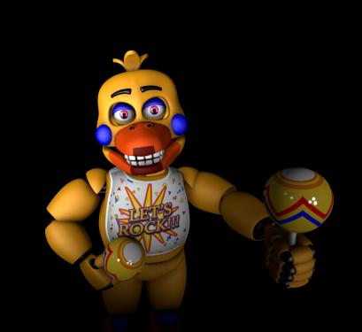
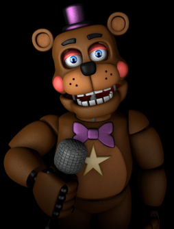
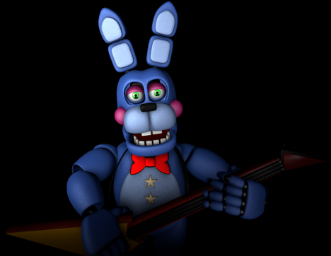
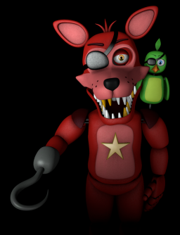

Notre restaurant est fier de vous présenter ses animatroniques :
Chica
Rencontrez Chica, la poule choriste de la bande. Elle est très extrovertie et adore manger, son plat préféré est la pizza.
Freddy Fazbear
Freddy Fazbear est un ours qui la mascotte de notre restaurant et est le chanteur principal du groupe. Il est souvent joyeux et très amical.
Bonnie
Le lapin Bonnie est le guitariste du groupe, malgrès son caractère trempé, il adore les calins et est très proche des enfants.
Foxy
Le pirate Foxy est un renard qui est très intelligent. Venez le retrouver sur la scène à côté de Chica, Freddy et Bonnie !